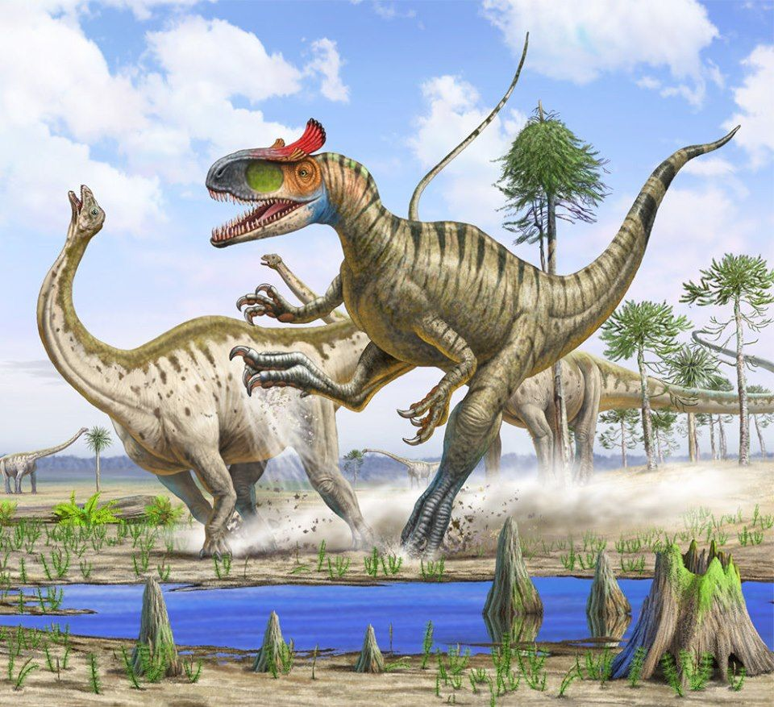

Cryolophosaurus
Đế Vương Nam Cực kỷ Jura
Tổng quan
Kỷ
Jurassic
Họ
Tetanurae
Chi
Cryolophosaurus
Dài
8 m
Nặng
500 kg
Thức ăn

Cryolophosaurus là một chi Theropoda lớn với chỉ một loài được biết tới, Cryolophosaurus ellioti, sống vào thời kỳ đầu kỷ Jura ở nơi ngày nay là Nam Cực.
Nguồn: wikipedia.org
Phân bố
Khu vực Nam Cực
Thông tin thêm về Cryolophosaurus
Kỷ nguyên
Cryolophosaurus được tìm thấy trong những lớp trầm tích thuộc Hệ tầng Hanson, có nguồn gốc từ Giai đoạn Pliensbach ở đầu Kỷ Jura. Như vậy, có thể ước tính chúng sống khoảng 170 triệu năm về trước.
Phân bố
Cryolophosaurus từng sống trong môi trường sống trên cạn tại lục địa cổ Gondwana, nơi ngày nay là châu Nam Cực. Nhiều người sẽ nghĩ đây là những con khủng long thích sống trong khí hậu lạnh. Tuy nhiên, nếu quay ngược thời gian về thời tiền sử thì nơi Cryolophosaurus sống đã từng có khí hậu ôn hòa rất dễ chịu.
Tên khoa học
Được đặt tên bởi giáo sư William Roy “Bill” Hammer năm 1994. Cái tên “Cryolophosaurus” (ghép từ “cryo” - lạnh giá, “lopho” - có mào và “saurus” - thằn lằn) là một cách mô tả ngắn gọn và súc tích nhất về đặc điểm hình dáng và nơi sinh sống của chi khủng long này (thằn lằn có mào sống ở vùng đất giá lạnh). Bên cạnh đó, tên loài đại diện là Cryolophosaurus Ellioti được đặt theo tên của David Elliot, người đã thực hiện khám phá ban đầu về hóa thạch.
Kích thước
Cryolophosaurus là một trong những loài theropod lớn nhất ở giai đoạn đầu kỷ Jura, có chiều dài khoảng 6 - 8 mét và nặng khoảng 350 - 500 kg.
Ngoại hình
Đặc điểm ngoại hình đáng chú ý nhất của Cryolophosaurus là một chiếc mào đặc biệt nằm ngay trên ổ mắt và chiếm hết chiều ngang của hộp sọ. Trong khi phần lớn các khủng long có mào khác thường có cấu trúc mào chạy dọc theo hộp sọ. Hình dáng của chiếc mào được so sánh với kiểu đầu Pompadour của Elvis Presley, do đó Cryolophosaurus còn có một cái tên không chính thức là “Elvisaurus”.
Nó có một mũi rộng và thấp, với hai hàm răng sắc nhọn, tay trước ngắn và chân sau dài, với bốn chiếc móng sắc nhọn. Cryolophosaurus nhiều khả năng cũng có lông vũ.
Chế độ ăn
Cryolophosaurus là một loài ăn thịt. Phân tích những bữa ăn cuối cùng của Cryolophosaurus người ta tìm thấy răng của một loài Synapsid được gọi là Tritylodont, một tổ tiên của động vật có vú và có họ hàng với hải ly hiện đại. Ngoài ra, các nhà khoa học còn tìm được một phần xương hoá thạch của một loài thằn lằn bay thuộc họ Rhamphorhynchoids.
Cryolophosaurus được cho là một con cơ động và nhanh nhẹn, và có thể đã săn mồi bằng cách chạy nhanh và tấn công bằng móng vuốt hoặc răng nanh.
Phân loại
Với những mẫu vật tương đối ít ỏi được tìm thấy về loài Cryolophosaurus, các nhà khoa học đã tiến hành việc vận dụng các công nghệ quét hiện đại cũng như dựa vào những loài khủng long họ hàng gần của chúng để tiến hành phân loại. Tuy nhiên, việc tiến hành phân loại này đã từng gặp nhiều khó khăn và có những tranh cãi gay gắt trong giới cổ sinh vật học.
Cụ thể, mẫu vật hóa thạch của loài Cryolophosaurus cho thấy sự kết hợp cả các đặc điểm của khủng long nguyên thủy và các đặc điểm của sự tiến hóa chỉ có ở các loài khủng long sau này. Xương đùi của Cryolophosaurus mang những đặc điểm giống với nhóm các loài Khủng long chân thú (tên khoa học: Theropoda) nguyên thủy, trong khi hộp sọ của chúng lại giống các thành viên xuất hiện sau của nhánh Khủng long đuôi cứng (tên khoa học: Tetanurae).